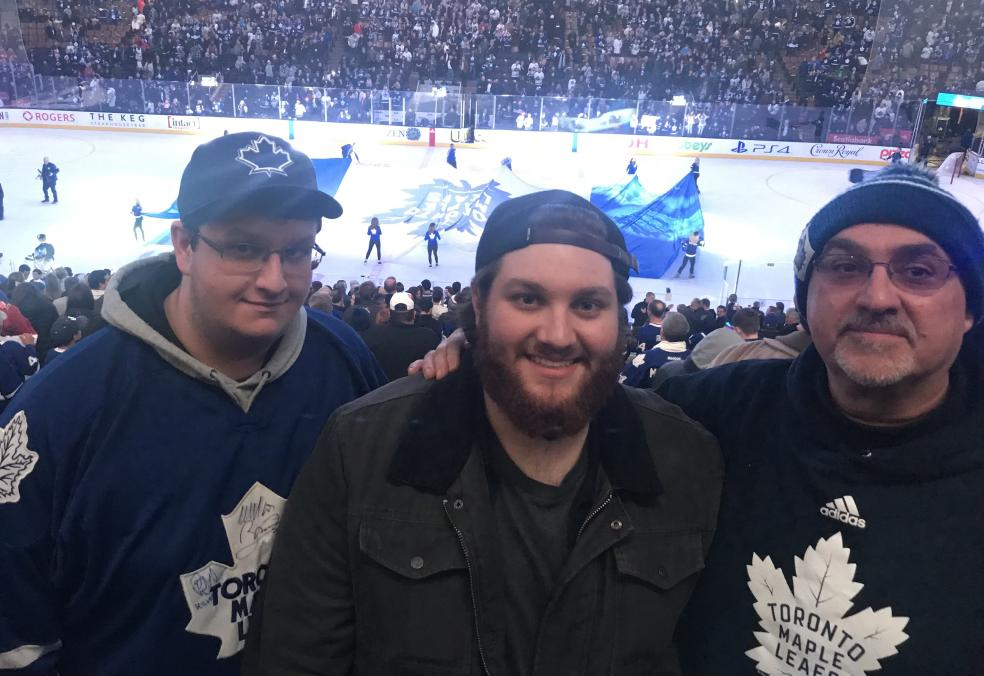
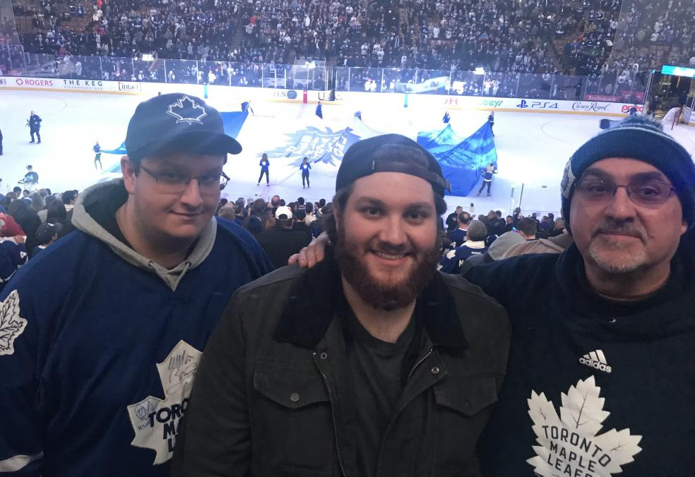
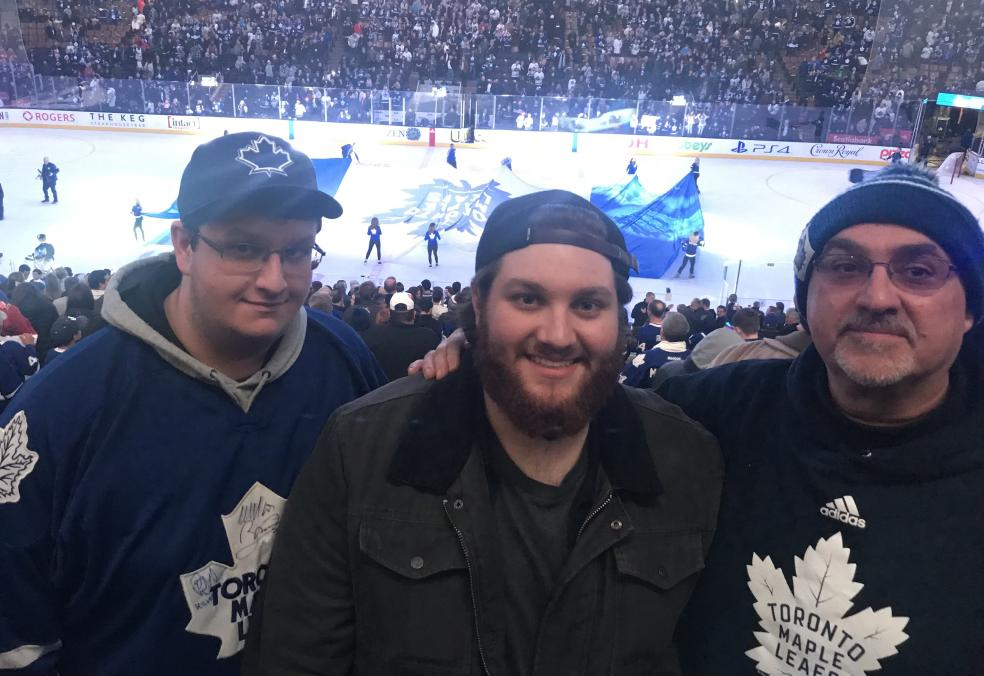
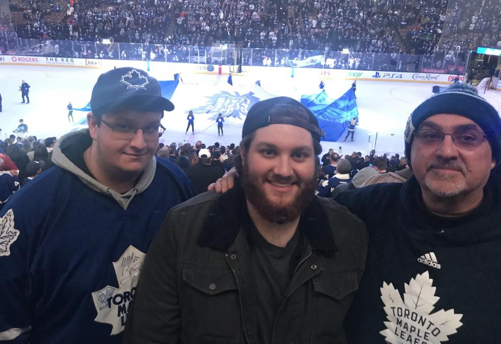

 

Hi there, my name is Matthew Tenuta. I am 19 years old and am currently a student in Fanshawe College’s Interactive Media Development & 3D visualization program. I was born in London, Ontario and for the last 19 years have lived in Rodney which is about 45 minutes west of London. I went to elementary school in Rodney and high school in West Lorne were I attended West Elgin Secondary School which was quite a small school compared to schools in London. I have grown up in the country, so moving into Fanshawe residence is a big change for me but so far I like living around other people my age and meeting new people.
Some of my hobbies include swimming, listening to music, watching movies, cooking, travelling and especially video games. I personally love video games and always have. Whenever I don’t have to do schoolwork or other important things, chances are I’m playing with my friends online. This is by far my favorite past time, and I would say is a big part of me as a person. My favorite food is pizza and lasagna (must be my Italian heritage) because its just so good, I mean like, who doesn’t like pizza right?
When I’m finished IDP I would love to get a job editing videos, creating ads, or developing websites for companies either alone or as part of a design/development team. I love working with photoshop to make funny pictures and other things which is one reason I like the design elements of IDP slightly more than the coding portion. It allows me to be imaginative and creative, plus I really enjoy making pictures and logos.